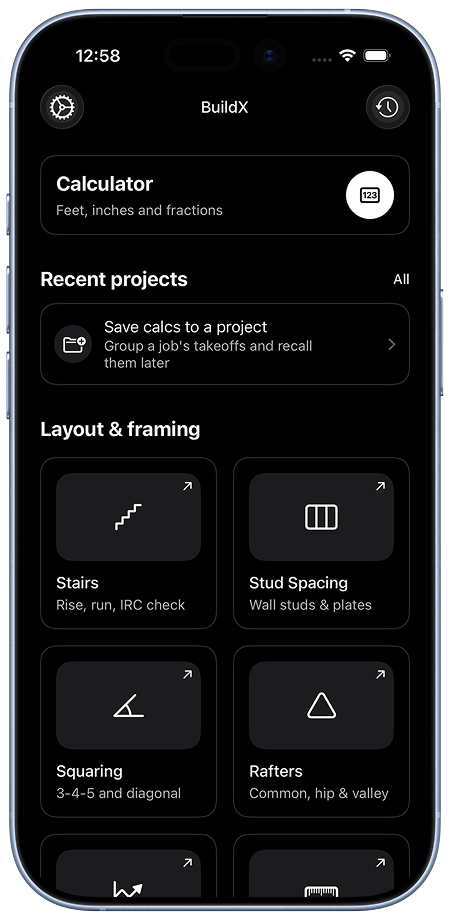
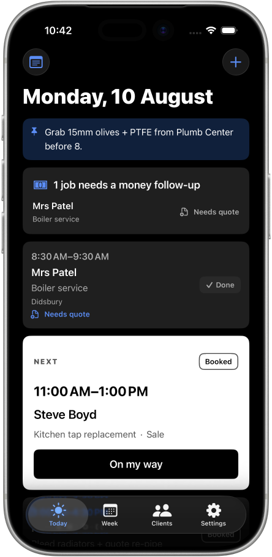
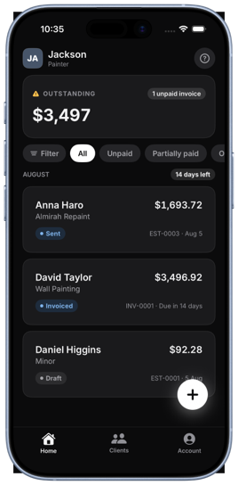
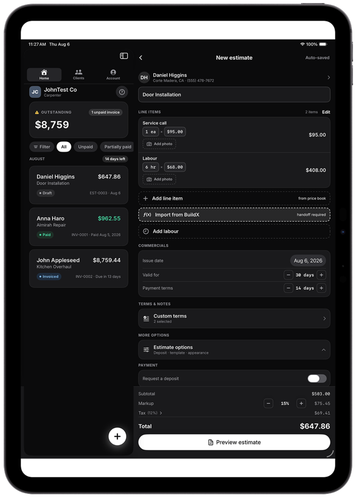

Support silence is a multiplier, not a theme
A bug is forgivable. A bug plus silence converts a frustrated user into a public detractor. That reframes support from a cost centre into part of the product's reliability story.
05 / Product suite / UX research
I could not recruit the tradespeople I was building for, so I read what they had already written about everybody else: 7,439 App Store reviews across fourteen competing apps and six markets, coded twice, plus the forums and national surveys around them. Five themes came out, and every product decision below is named against the one it answers.
Context
BuildX, TradeBill and JobBook are live on the App Store; RateX is in review. All four are aimed at the same person - a sole trader or one-van business running the day from a phone - and by mid-2026 the roadmap for all four was resting on assumptions about that person that nobody on the project had tested.
Recruiting them properly is hard and slow: they are working, they are not on design panels, and the trade Facebook groups where they actually talk are closed to anyone without an account. So I used the cheapest honest proxy available. Tradespeople have already written millions of words about software that failed them, in public, unprompted, at the moment they were angriest. That corpus cannot tell me what my users do. It can tell me, with unusual precision, what makes this audience abandon a product and say so in writing.
Suite roles
Each application owns a distinct part of the work. The suite is not presented as a single super-app; it is a system of clear, connected tools.
A fourth product, RateX, is in App Store review at the time of writing, so it has no public page to link to yet. Its research is included in this case study because it was collected and coded in the same pass and it shares the same audience: the rate and profit side of the same one-van business.
01
Exact construction math and practical tools that support planning and work in the field.
02
Jobs, schedule visibility, and follow-up status - so the day’s work remains actionable.
03
Quotes and billing handoffs, designed to make commercial next steps easier to understand.



Method
Each product got its own corpus, chosen so the competitor set matched the shelf that product actually sits on. Where the corpora overlap - and they overlap a lot - a finding is stronger, because it survived a different sample.
| Study | Corpus | Why this set |
|---|---|---|
| TradeBill - invoicing & quoting | 7,439 App Store reviews across 14 apps and 6 English-speaking markets; 1,832 of them negative (24.6%), which is the analysed set, with the 5,607 positive reviews kept as a contrast set. Triangulated against four Trustpilot corpora | Large enough to quantify. The contrast set is the part that matters most - it says what people praise, not only what they hate |
| JobBook - job diary | ~150 reviews across 5 apps, deliberately including a 2.88-rated one; Capterra pros/cons for two market leaders; five trade-forum threads; a 140-respondent UK trades survey | The low-rated app was included on purpose: it is the richest source of failure modes in the category |
| BuildX - construction calculator | ~20 sources: review sets for six competing calculators, two trade forums, trade-press reviews, and a 510-respondent frontline-worker survey | The only one of the four where a quantitative survey covers the physical conditions of use |
| RateX - rate & profit | ~60 distinct complaints collected across UK and US trade communities, four job-management review corpora, national trade-press surveys, and job-costing literature | This audience's money problems are discussed in forums and surveys far more than in app reviews |
The first pass was deliberately structureless - term-frequency and bigram analysis over the negative corpus to surface candidate themes without imposing a prior framework, then manual reading of a random sample of still-uncoded reviews to catch what keyword analysis misses. That second step is how three findings were caught that no keyword would have surfaced: data lock-in, in-app nagging, and - the important one - price escalation as a thing entirely distinct from price level.
The second pass was structured: a codebook of twelve codes with sub-codes nested under parent themes, applied across the whole corpus, plus a co-occurrence matrix to test whether the themes were genuinely separate or quietly collapsing into each other. BuildX's smaller corpus was coded by hand on the same principle - codes generated from the data, then clustered by shared underlying cause rather than by surface topic.
After coding, 40.4% of negative reviews carried no theme code. 168 of those were contentless ("very bad app"), leaving a substantive uncoded residue of 31.2% - mostly single-app feature requests too specific to generalise. I am stating that number rather than burying it: a coding scheme that claims to explain everything is a coding scheme that has stopped listening.
Limitations
These limits change how much weight each finding can carry, so they belong in front of the findings rather than in a footnote at the end.
Findings
Five themes account for the overwhelming majority of negative sentiment, ranked here by share of the 1,832 negative reviews.
| # | Theme | Share | The sharpest sub-code inside it |
|---|---|---|---|
| 1 | Pricing betrayal - the deal keeps getting worse after you are committed | 33.0% | Retroactive gating of core work (4.6%): features that were included get moved behind a higher tier, or an unlimited allowance is capped |
| 2 | Reliability and lost work - the app ate the estimate | 16.3% | Update regression (5.2%): redesigns experienced as sabotage, with no way to roll back |
| 3 | The support vacuum - nobody is on the other end | 11.3% | An urgent, money-blocking problem meeting a chatbot |
| 4 | Custody of money - the app is holding my cash | 9.4% | Payouts frozen for risk review during the week materials need buying |
| 5 | Wrong size for a one-man band - built for a fleet, sold to a solo | 7.3% | Onboarding cost measured in evenings, and per-seat pricing for seats that will never be filled |
Two secondary themes: interruption and nagging (4.7%) - rating prompts and upsells placed between the user and the invoice - and data lock-in (3.5%), which is the mechanism that turns theme 1 from an annoyance into a trap.
The dominant complaint is not about features, usability, or even price level. It is about price and access changing after the user has become dependent - invoices retroactively capped, features moved up a tier, prices raised annually on loyal customers. This audience is not price-sensitive so much as betrayal-sensitive. The tell is the vocabulary: they describe the vendor in moral language - greedy, scam, ripped off, "should be ashamed" - not in product language. And the negative reviews consistently open by stating tenure: thirteen-year user, been on this since 2016. The angriest cohort is the most committed one.
Reading the 5,607 positive reviews turned out to be more directive than reading the complaints, because praise in this category is startlingly narrow.
| Praised attribute | Share of positive reviews |
|---|---|
| Simplicity and ease of use | 29.5% |
| Speed - "minutes", "saves time" | 9.2% |
| Professional-looking output | 8.4% |
| On-site use in front of the customer | 0.8% by keyword - but qualitatively this is the hero scenario in almost every five-star review that describes a moment |
Simplicity is praised more than three times as often as anything else. So the market's winning proposition and its loudest failure mode are the same axis: restraint. The job to be done, stated as the corpus states it: produce a document that makes me look legitimate, in front of the customer, before I leave the driveway. Everything beyond that - CRM, dispatch, analytics - is at best neutral and at worst the direct cause of theme 5.
The BuildX corpus, collected separately and for a different product class, produced the sentence that explains the other three studies: tradespeople want a tool, and these apps keep behaving like software.
| What a tool promises | What the software did instead |
|---|---|
| I buy it once and I own it | Recurring fee, ads on every tap, purchase lost when the platform changed |
| I can see what it is doing | One number visible, no working shown, fractions truncated in the result line |
| It works the way the trade works | An invented keystroke grammar that needs a manual - or, in two cases, an AI assistant to explain it |
| It works where I work | Screen timeout mid-measurement, state lost, targets sized for a clean fingertip on unbroken glass |
| It does not lose my work or disappear | A competitor's save overwrote 300+ projects built over two years; another app was discontinued and took its users' data with it |
That last row is the severest single item in any of the four corpora, and it cost one reviewer two years of work. It is also, in engineering terms, a cheap bug to prevent - which is exactly why it is worth putting in front of a product team.
The trust arc
Coded together, the negative corpus describes a single lifecycle that recurs across every vendor in it.
Three pieces of evidence say this is a real arc rather than a frame I imposed on it. Negative reviews lead with tenure, so the angriest people are the most invested. The co-occurrence matrix shows the stages compounding rather than substituting: pricing co-occurs with reliability in 78 reviews and with support in 76. And lock-in is the mechanism that makes the arc painful at all - without it, users would leave quietly at Extract instead of staying, resenting, and detonating in public.
A bug is forgivable. A bug plus silence converts a frustrated user into a public detractor. That reframes support from a cost centre into part of the product's reliability story.
Not the account, not the database. The half-finished quote, in front of a customer. That is the thing persistence has to protect first.
A redesign that is objectively better still costs trust when it invalidates learned motion. 5.2% of negative reviews are that, specifically.
Evidence → decisions
This is the part I would want to be judged on. A study that ends in themes is half a study; the test is whether anything moved because of it. Some of these were cheap, some reversed a previous plan, and one was a defect the research escalated to the top of the list.
| What the research found | What changed as a result |
|---|---|
| Fraction entry is sequence-dependent and uninferable across the whole category - competitors patch it with manuals and AI explainers | Promoted to the single highest priority, because BuildX carried this exact defect: entering a bare fraction required pressing a/b before the numerator, so typing 3, a/b, 4 did not give three-quarters. Making entry order-independent and rendering the interpretation live as it is typed - explicitly not solving it with a help page, because the competitors already proved that route |
| Users cannot audit their own arithmetic; they re-do the maths by hand, which erases the app's value | The inline solver strip with labelled registers moved from backlog nice-to-have to the next release's headline. Fraction legibility reclassified as a correctness requirement, not a layout preference |
| The most-repeated usability complaint in the corpus is the screen timing out mid-measurement, losing entered values | Disable the idle timer on calculator screens and guarantee state restoration across lock, background and termination. High impact, low effort - the cheapest win in any of the four studies |
| A competitor's save overwrote 300+ projects; others shipped with no way to create or delete one | Save-integrity regression tests asserting that saving project N leaves 1..N−1 intact, plus complete project CRUD |
| >80% of 510 surveyed frontline workers have damaged their device; ~3 in 4 have cracked screens; 86% want glove-compatible touchscreens while 77% use ordinary consumer phones | Size for a gloved tap on cracked glass in sunlight, verified on the smallest supported device rather than the largest - and assume one-handed portrait use, because the other hand is holding the tape |
| What the research found | What changed as a result |
|---|---|
| The single highest-heat complaint pattern in the entire corpus is being unable to see work you already created once a trial or tier lapses | Guarantee permanent, unconditional read and export of documents already created, regardless of subscription state. The paywall must never stand between a user and a document they already made. Cheap to implement, and it neutralises the top complaint in the category |
| Billing dark patterns - charges after cancellation, cancellation you cannot complete - account for 3.3% of negative reviews | A structural advantage that was going unstated: billing runs through StoreKit, so cancellation is Apple's own flow and this failure mode is unavailable to us. Now said explicitly in paywall and listing copy |
| Escalation on loyal users is the specific trust-killer, and tenure predicts anger | A public price-stability commitment for existing subscribers. Costs nothing today and directly answers the mechanism that produces the 1★ reviews |
| Data lock-in (3.5%) is what converts pricing anger into a trap | CSV export made prominent and never paywalled. "Your data leaves whenever you want" answers the fear underneath theme 1 |
| Simplicity is praised in 29.5% of positive reviews, more than three times anything else | Time from app-open to a sendable document in front of a customer is now a protected metric. Any addition that lengthens it is treated as a regression, whatever else it adds |
| What the research found | What changed as a result |
|---|---|
| Offline failure is the most repeated complaint about the market leader, framed not as a missing feature but as a reason not to depend on the app commercially - "if you don't have signal, you don't have anything" | JobBook was already offline-first, with no account and no background location, for unrelated reasons. The research turned that from an implementation detail into the primary claim: stated on the paywall and the first App Store screenshot, where a buyer can actually read it |
| 77% of tradespeople do admin in the evening and about half at weekends; 5h20 a week on quoting, invoicing and chasing, up to 8h on all repetitive admin | The v1.1 headline became an end-of-day close-out flow - one screen at the door: confirm actual hours, caption photos, lock the checklist, choose the next action per job. This is the one genuinely unserved need in the category; every competitor is built around the office |
| Forms wiped by a crash or a forced logout produce the angriest reliability reviews | Draft persistence in the job editor and the note and checklist sheets - restore exactly what was typed after a kill or a background |
| £5,901 average owed in unpaid invoices; 67% have had a customer deliberately delay or dispute payment; signature capture is useless without signal, and no signature means no payment | Offline signature capture with an on-device job-sheet PDF - something a cloud-first competitor structurally cannot ship - plus scheduled follow-up nudges with one-tap templated text, using a flag the data model already had and nothing was chasing |
| A free, brand-trusted competitor launched mid-study, explicitly positioned on "giving tradespeople their evenings back" | Confirmed the thesis and sharpened the threat. 54% of trades businesses spend under £50/month on all software combined, so JobBook's price is not the exposure - the zero free tier is |
| What the research found | What changed as a result |
|---|---|
| Solo tradespeople bill roughly 30–50% of clocked hours - 1,000–1,400 hours a year, not 2,080 - and the published burden rate for electrical contractors runs 42–52% on top of the wage | The floor-rate calculation had been asserting the right denominator without a source. It now has one, and the itemised breakdown is built around it. That single unconsidered assumption - dividing by 2,080 - quietly underprices every job for a decade |
| The person is not aware they have the problem. They know the symptom - working constantly and not getting ahead - and consistently misdiagnose it as not enough work | The product must perform the arithmetic and present the conclusion, not offer a place to do the arithmetic. A blank calculator satisfies nobody who does not already know they need one |
| This is a population with real pride in craft - 84% would still recommend the trade despite 93% reporting stress - and considerable discomfort about money. They give work away and call it being helpful; they will not raise prices on a customer who feels like family | Full vindication of an earlier call that had been made on instinct: a below-floor result is never shown in red, and there are no progress bars. A tool that tells this person their work was underpaid is making a statement about them, not about a job. Get the tone wrong and you do not get a motivated user, you get a deleted app |
| Offline was being presented as a privacy property; the reviews show this audience feels it first as an availability property | Reframed in the listing: the app works in the basement where the competitors don't. Both claims are true; that is the one they have already complained about in public |
| 864,000 UK sole traders enter digital tax reporting from April 2026, 79% of tradespeople are unready - and RateX deliberately calculates no tax | An unhandled 1★ risk, caught before launch. Someone will install a money-shaped app expecting tax help. The listing copy now states what RateX is not, in the same breath as what it is |
An earlier, lighter pass had flagged in-app payment collection as a gap in TradeBill. This corpus argues close to the opposite. Custody of money accounts for 9.4% of all negative reviews and contains the most severe writing in the dataset - held payouts, risk-review freezes, surprise processing rates, deposits stuck for weeks during exactly the period a contractor needs to buy materials. Embedding payments converts a software vendor into a quasi-financial institution and inherits underwriting, fraud review and payout timing, and every one of those becomes a one-star review with your name on it.
So "we never hold your money - your customer pays you directly" moved from an apology to a positioning asset. I am flagging it as a reversal rather than presenting the conclusion cleanly, because the interesting thing about this study is not that it produced findings. It is that it overturned something the team already believed, and a research write-up that never contradicts its author is not worth reading.
One recommendation is explicitly held back. The BuildX fraction-entry fix is ranked first on the strength of secondary evidence alone, and the correct next step is a five-participant unmoderated first-use test - "enter three-quarter inch", measuring first-attempt success and time to recovery - before any large build follows from it. That study is the fastest and highest-value one available across all four products, and it has now been deferred through two research rounds.
Design choices
These four principles predate the research. Two of them it confirmed - visible status and clear ownership are what theme 2 and theme 5 are asking for. The other two now have to justify themselves against the simplicity finding, because a shared pattern that costs a second of time-to-document is not free.
Handoff model
The suite makes responsibility explicit. Each product owns a task, and the person can understand what changed before they continue.

Open questions
Named plainly, because the gap between what a study establishes and what it gets used to justify is where research goes wrong.
Reflection
Three products are live and RateX is in review, and this study changed the roadmap of all four - it found a shipped defect in BuildX, rewrote TradeBill's paywall policy, gave JobBook its v1.1 thesis, and reversed a decision the team had already made about payments. For a study that cost nothing but reading time, that is a good return.
It is also the limit of what reading can do. The whole thing rests on a proxy: people complaining about somebody else's software, which tells me what this audience will not tolerate but nothing about whether my particular expression of the idea lands. Five people, a phone, and a quiet hour each would settle more than the next 7,000 reviews. That is the next study, and I would rather say so here than let a well-organised secondary analysis pass for something it isn't.